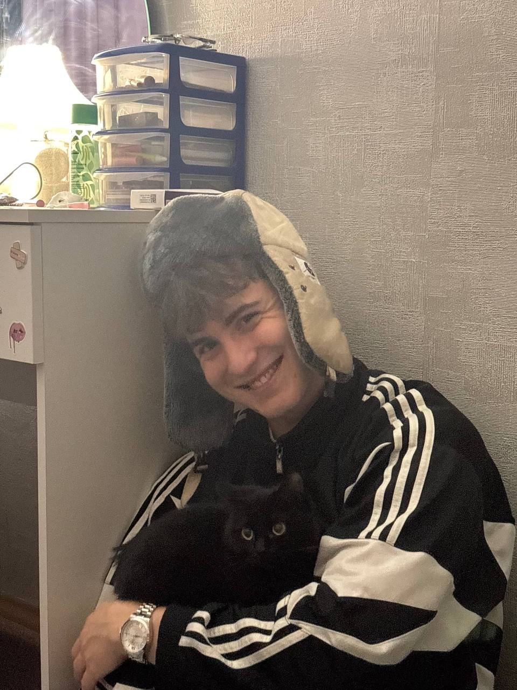
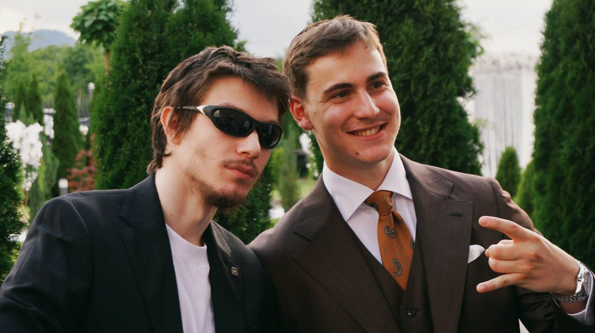

Полное имя — Большаков Артём Александрович, более известен под псевдонимом PSHNKN (Пшеничкин). День рождения — 9 декабря.
Артём — сооснователь группы наравне с Гоэлем. Он не только гитарист, но и основной продюсер: большую часть треков KSB muzic продюсирует именно PSHNKN. Также выступает как соавтор песен.
У Артёма есть сольный проект PSHNKN, в котором он пишет «общажный рок» в домашней студии. На Яндекс Музыке у сольного проекта более 62 тысяч слушателей в месяц. Релизы включают альбомы «Жизнь» (2025), «Сон», «Тоска» и треки «Восход», «Дамы», «Али», «Крылья».
В своей ВК-странице Артём пишет, что проект PSHNKN основан «продюсером и гитаристом группы KSB Muzic» — то есть он позиционирует себя именно как создателя звучания.